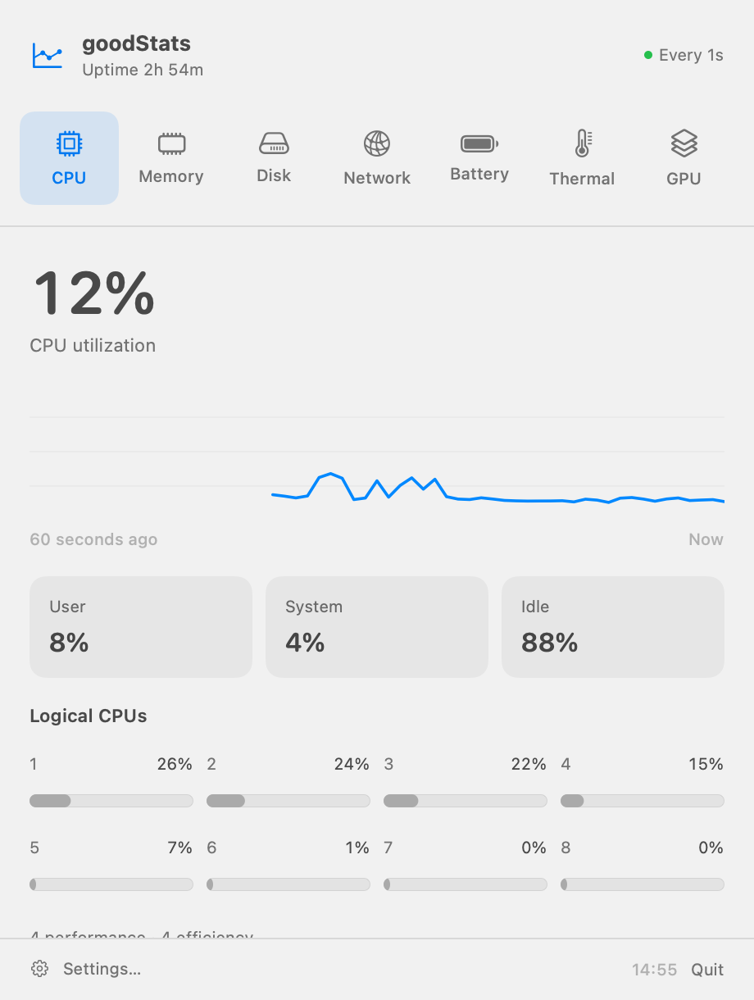
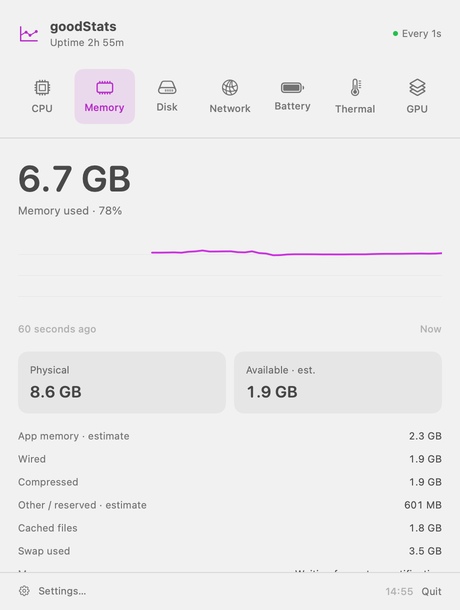
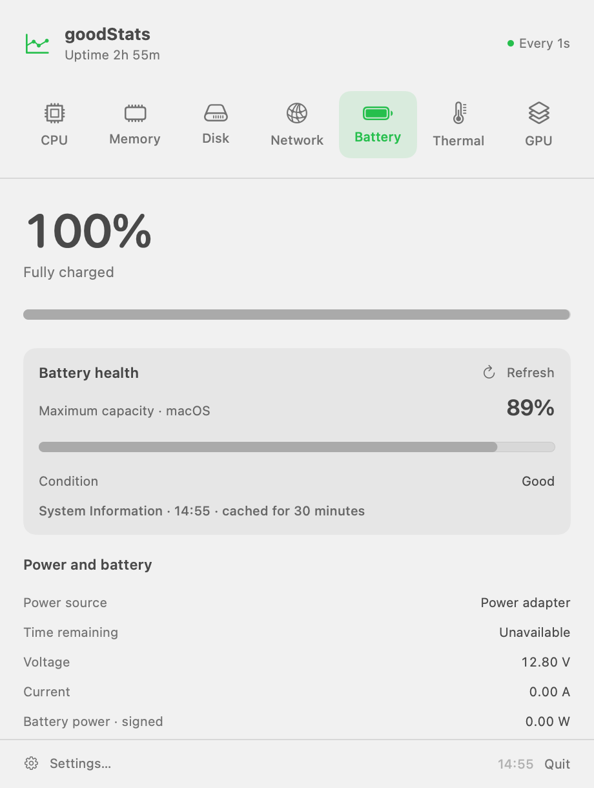

CPU & memory
Follow processor activity, load and uptime. See memory usage, swap, compression and the memory pressure reported by macOS.
A little more insight into your Mac
Keep useful system readings in your menu bar. Open the details panel for context, then get back to what you were doing.
Coming to the Mac App Store

Useful readings. Clear context.
Follow processor activity, load and uptime. See memory usage, swap, compression and the memory pressure reported by macOS.
Watch download and upload rates for your chosen network interface. Check volume capacity and physical drive activity where available.
Check charge, cycle count and macOS maximum capacity on supported Macs. View thermal state, Low Power Mode and GPU hardware information.
Short history charts help you follow changes. The readings available depend on your Mac and the information macOS exposes.


Make it yours
Choose your menu bar modules, drag them into your preferred order, and pick symbols or words beside each reading. Adjust refresh intervals, chart history and units in Settings.
Enable Launch at Login to have goodStats ready when you sign in. Appearance follows macOS.
Local by design
No account, advertising, analytics or telemetry. System readings are processed locally, preferences are saved on your Mac, and short chart history stays in memory.
Unsupported values are marked unavailable. Memory categories are estimates and can differ from Activity Monitor. APFS volumes can share capacity. Thermal state describes system thermal pressure; it is not a CPU temperature. GPU information describes hardware capabilities, rather than system-wide GPU utilization.